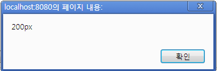

javascript는 DOM을 통해서 Html을 제어합니다.
DOM은 문서를 프로그램을 통해 access 하고 변경하기 위한 프로그래밍 인터페이스입니다.
DOM처리의 일반적인 순서는 다음과 같습니다.
첫째, 제어할 대상을 찾습니다.
둘째, 대상이 가지고 있는 메소드를 실행하거나, 이벤트 핸들러를 설정합니다.
설명하기에 앞서 DOM에 대한 기본적인 용어와 개념에 대해 알아보겠습니다.
DOM을 제어하는 방식은 여러가지가 있습니다. 직접 DOM API를 이용해서 제어해도 되고 요즈음 많이 사용하고 있는 자바스크립트 오픈소스 라이브러리인
jQuery, Sencha등을 활용해서도 DOM을 제어할 수 있습니다.
그러나 본 튜토리얼에서는 Rui(RichUI)를 이용한 DOM 제어에 대해 알아보겠습니다. Rui에서는 DOM을 제어하기 위한 여러 함수들을 제공합니다.
지금부터 그 사용 방법을 하나씩 알아보도록 하겠습니다.
<!DOCTYPE html>
<html>
<head>
<meta http-equiv="Content-Type" content="text/html; charset=utf-8" />
<meta name="devon-rui-sample" content="yes" />
<meta name="devon-rui-keyword" content="Dom 컨트롤, LElement 컨트롤" />
<title>Element Control</title>
<script type="text/javascript" src="./../../../js/rui_base.js"></script>
<script type="text/javascript" src="./../../../js/rui_core.js"></script>
<script type="text/javascript" src="./../../../js/rui_ui.js"></script>
<script type="text/javascript" src="./../../../js/rui_form.js"></script>
<script type="text/javascript" src="./../../../js/rui_grid.js"></script>
<script type="text/javascript" src="./../../../resources/rui_config.js"></script>
<link rel="stylesheet" type="text/css" href="./../../../resources/rui.css"/>
<script type="text/javascript" src="./../../../sample/general/rui_sample.js"></script>
<style type="text/css">
#frm label {display: block;float: left;width: 10%;clear: left;}
.clear {clear: both;}
#demo {background: #ccc;margin-bottom: 1em;height: 30px;width: 30px;}
.container {height: 260px;}
.over_test {font-weight: bold;}
.focus_test {background: #ccc;}
.click_test {background: red;}
</style>
<script type="text/javascript" class="script-code">
var panelEl = null;
Rui.onReady(function(){
//실행코드작성
});
</script>
</head>
<body>
<input type="hidden" id="test" name="test" />
</body>
</html>
위 소스코드에서 라인 30~31부분은 프로그램 시작부분으로 <body onload="function()">와 동일한 로드이벤트입니다.
이 위치에 스크립트를 작성하게 되면 페이지 로딩시 이 부분에 기술된 프로그램 로직이 실행되는 부분입니다.
위 html태그중 36라인의 DOM Id가 state인것을 찾아서 값을 넣고 싶다면 아래와 같이 스크립트를 작성합니다.
Rui.onReady(function(){
// 실행코드작성
var dom = Rui.get('state');
dom.setValue('테스트1');
// or
Rui.get('state).setValue('테스트2');
// 해당 Dom element의 설정된 값을 불러오기
alert(Rui.get('state').getValue()); // "state"
});
Rui.get('state')는 DOM element를 반환하며 반환된 객체(object)를 통해 HTML DOM의 속성(attribute) 값 등을 제어할 수 있습니다.
위에서 특정 DOM element를 찾는 방법을 알아 보았습니다. 이번에는 찾은 DOM element의 속성들을 변경하는 방법에 대해 알아 보겠습니다.
만약 해당 DOM의 크기를 변경하고 한다면 아래와 같이 기술합니다.
Rui.onReady(function(){
// state 박스의 넓이값 변경함
Rui.get('state').setStyle('width', '200px');
// state 박스의 넓이속성값 읽어오기
alert(Rui.get('state').getStyle('width'));
// state 박스의 넓이값 변경함
Rui.get('state').setStyle('height', '48px');
// state 박스의 넓이 속성값 읽어오기
alert(Rui.get('state').getStyle('height'));
});

HTML DOM Events는 자바스크립트로 HTML Document를 구성하고 있는 elements에 이벤트 핸들러를 등록할 수 있습니다
HTML DOM 이벤트의 종류에는 마우스 이벤트, 키보드 이벤트, 폼 이벤트, 객체 이벤트 등이 있습니다.
Rui에서는 Rui.get()함수로 얻은 element 객체에 이벤트 핸들러를 쉽게 등록할 수 있습니다.
DOM Id가 'state'인 input element에 대해서 click 이벤트를 등록하여 마우스로 클릭했을 경우 DOM에 값을 설정하는 예제입니다.
Rui.onReady(function(){
// 실행코드작성
var dom = Rui.get('state');
dom.on('click', function(e){
this.setValue('busy'); // this --> 이벤트를 등록한 자기 자신의 객체
Rui.get('user1').setValue('busy');
});
});
<body>
<input type="text" id="state" name="state" />
<input type="text" id="user1" name="user1" />
</body>
위 코드를 실행하면 다음과 같은 결과를 볼 수 있습니다.